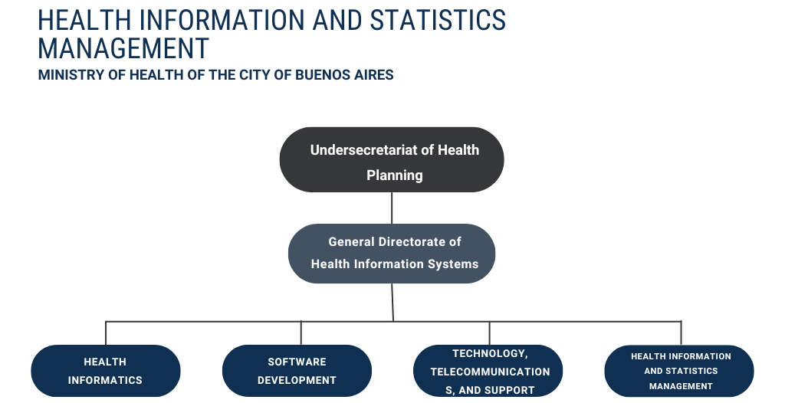
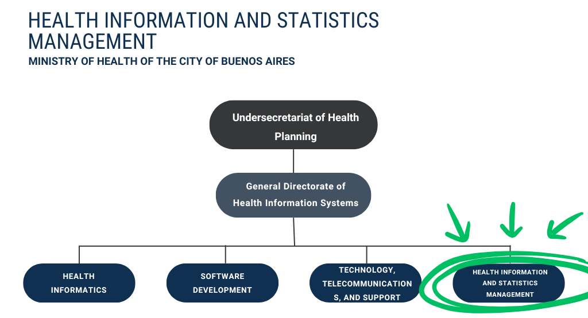

Optimizing Public Healthcare Cost Recovery with R
A Use Case from Argentina
May 26, 2025
Information and Health Statistics Management Office
Ministry of Health of the City of Buenos Aires


Information and Health Statistics Management Office
Ministry of Health of the City of Buenos Aires
